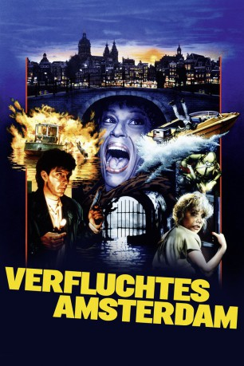

#2738 Verfluchtes Amsterdam
Alternativ: Amsterdamned
 
 IMDB-Wertung: 6.5 / 10
IMDB-Wertung: 6.5 / 10  Metascore: 0
Metascore: 0 
Während einer Sightseeing-Tour durch die Grachten von Amsterdam wird die Leiche einer Frau entdeckt. Eric Visser Huub Stapel, ein junger Polizei-Inspektor, wird mit dem Fall beauftragt. Die ersten Ermittlungen laufen gerade, schon werden weitere Frauen kaltblütig 'abgeschlachtet'. Wie es scheint, taucht der Mörder vollkommen überraschend für seine Opfer aus dem Wasser auf. Nachdem Visser die hübsche Laura kennenlernt, ergeben sich plötzlich merkwürdige Verbindungen zu dem gnadenlosen Killer...
Jahr: 1988
Dauer: 113 Minuten
FSK: 16
Land: Niederlande Studio: Scotia-CannonTonspuren:
Untertitel: Deutsch,
Auflösung: 1080p (1920x1080) Größe: 6942 MB
Genre: Action, Thriller, Horror
Regisseur: Dick Maas
Drehbuch: Dick Maas
Soundtrack: Dick Maas
Darsteller:
- Huub Stapel als Eric Visser
- Hans Dagelet als Suspect
- Inge Ipenburg als Canalboat guide
- Flip Filz als Younger policeman
- Monique van de Ven als Laura
- Serge-Henri Valcke als Vermeer
- Tanneke Hartzuiker als Potter
- Wim Zomer als John van Meegeren
- Hidde Maas als Martin Ruysdael
- Lou Landré als Chef
- Tatum Dagelet als Anneke Visser
- Edwin Bakker als Willy
- Door van Boeckel als Maniac
- Barbara Martijn als Prostitute
- Pieter Lutz als Skipper
- Simone Ettekoven als Salvationist
- Koos van der Knaap als First Environmentalist
- Pieter Loef als Second Environmentalist
- Paul van Soest als Manager
- Jules Croiset als Mayor
- Helmert Woudenberg als Chief Commissioner
- Lettie Oosthoek als Bag lady
- Bert Haanstra als Conductor
- Simon van Collem als Man on waterbike
- Inge Beekman als Woman on waterbike
- Laurens Geels als Doctor
- G.H. van Essen als Truck driver
- Bert Luppes als Driver's friend
- Ko van den Bosch als Taxi driver
- Jaap Stobbe als Taxi driver
- Louise Ruys als Housekeeper
- Roelant Radier als Pathologist
- Leontine Ruiters als Girl in gumboat
- Don Duyns als Boy on houseboat
- Hans Beijer als Street cleaner
- Freark Smink als Doctor
- Myra de Vries als Nurse
- Jan van Eijndthoven als Shopkeeper
- Leonie de Laat als Shopwoman
- Lars Boom als Policeman next to Salvationist
- Tjerk Risselada als Policeman next to Salvationist
- Jan Winter als Policeman in water
- Huub Goedegebuure als State policemen
- Frank Brouwer als Policeman
- René Lobo als Older policeman
- Franklin Salanous als Police car driver
- Jan de Koning als Tinus
- Eric Kuit als Man with dog
- Leo Straus als Hospital porter
- Marien Jongewaard als Boy in guest house
Datei: X:\1988\Verfluchtes Amsterdam (1988, FSK16, 1920x1080).mkv seit 09.12.2015
Festplatte: HD 1987-1991
 Es gibt insgesamt 66 Filme in der Gruppe '1988'
Es gibt insgesamt 66 Filme in der Gruppe '1988'